独占と寡占の理論
本補助資料は本書本文第4章で取り扱った「価格設定者の存在による市場の失敗」を，標準的な教科書にある設定で詳しく解説する．本文第4章では離散市場のカルテル例で死荷重損失の直観を与え，また第9章では売り方の設計として独占企業の価格付けや価格差別について説明した．本付録では標準的なミクロ経済学の教科書範囲に含まれる形で独占の利潤最大化（MR = MC）とラーナー指標，クールノー・ベルトラン・ホテリングといった寡占モデル，繰り返しゲームによるカルテルの分析，プラットフォーム市場（二面市場）の理論を説明する．最適反応・ナッシュ均衡などゲーム理論の基本概念の詳細は本文のゲーム理論の章を参照のこと．
D.1独占の利潤最大化（MR = MC）
本文第3章では，消費者や企業が価格を所与のものとして受け入れるという仮定のもとで需要曲線・供給曲線を導き，市場取引が社会的総余剰を最大化することをみた．実際には，企業の数が少なければひとつひとつの企業が価格に与える影響力は無視できないし，企業の側も自社が価格に与える影響力を考慮に入れて意思決定をするだろう．まずは市場に企業がただ一社しかない場合，すなわち独占の場合に焦点を当てて，その戦略的行動を解き明かす．
逆需要関数
独占企業の行動を考えよう．企業は利潤を最大化するように供給量 $q$ を決定したい．利潤は次のとおりである．
\[ \pi(q)=p\times q - C(q) \]一方で，本来価格というものは需要と供給が一致するように決まるものである．需要量は需要関数 $D(p)$ によって与えられる．一方で供給量はこの独占企業が決める量 $q$ である．したがって以下の式が成立する．
\begin{equation} \underbrace{D(p)}_{\text{需要量}}=\underbrace{q}_{\text{供給量}} \label{eq:mono-clear} \end{equation}価格は式 \eqref{eq:mono-clear} を満たすように決まるはずであり，その値は当然，供給量によって変わる．そこで，市場均衡価格 $p$ と供給量 $q$ の関係を関数 $P$ を使って次のように書き表そう．
\begin{equation} p=P(q) \label{eq:inv-demand} \end{equation}独占企業はこの逆需要関数を認識して，自社の生産量を決めるだろう．つまり独占企業は自社の供給量を通して市場価格を（ある程度）コントロールできるのである．これを織り込むと，企業の利潤は次の式で書くことができる．
\begin{equation} \pi(q)=P(q)\times q-C(q) \label{eq:mono-profit} \end{equation}本文第3章の供給の分析では，$P(q)$ が自社の生産量によって動かないものと想定していた．これは価格受容者の仮定と呼ばれる．価格をそのまま受け入れて意思決定するからである．すべての主体が価格受容者として振る舞う市場は完全競争市場と呼ばれる．しかし独占企業はもはや価格受容者ではなく，価格設定者である．
独占企業の最大化問題
式 \eqref{eq:mono-profit} で与えられた利潤を最大化する生産量を，微分を使って求めよう．まず収入 $P(q)\times q$ を微分したもの $[P(q)\times q]'$ を考える．これは生産量をほんの少し増やしたときに収入がどれだけ増えるかを表すもので，限界収入（marginal revenue, MR）と呼ばれる．
もし限界収入が限界費用 $C'(q)$ より大きい，つまり $[P(q)\times q]'\gt C'(q)$ であるとしてみよう．このとき生産量をほんの少し増やすと，収入の増分のほうが費用の増分より大きいので，利潤は合計で増加する．したがってもっと生産したほうがよい．逆に $[P(q)\times q]'\lt C'(q)$ であれば，生産量を増やすと費用の増分のほうが収入の増分より大きく，利潤は減少する．それならば生産量を減らしたほうが利潤は増える．結論として，利潤を最大化している生産量では以下の等式が成立する．
\begin{equation} \underbrace{[P(q)\times q]'}_{\text{限界収入}}=\underbrace{C'(q)}_{\text{限界費用}} \label{eq:mrmc} \end{equation}具体的な練習問題を通じて利潤最大化問題を解いてみよう．$D(p)=10-2p$，$C(q)=3q$ とする．まず逆需要関数を求める．逆需要関数 $p=P(q)$ とは，需要関数の式 $D(p)=10-2p=q$ を $p$ について解いたものである．実際に計算すると $p=5-\frac{1}{2}q$，すなわち $P(q)=5-\frac{1}{2}q$ となる．これを収入 $P(q)\times q$ の式に代入すると
\begin{align*} P(q)\times q &=\left(5-\frac{1}{2}q\right)\times q\\ &=5q-\frac{1}{2}q^2 \end{align*}したがって，限界収入と限界費用はそれぞれ以下のように計算できる．
\begin{align*} [P(q)\times q]'&=5-q\\ C'(q)&=3 \end{align*}これを $[P(q)\times q]'=C'(q)$ に代入して整理すれば $q=2$ を得る．これが独占企業の利潤を最大化する生産量である．
独占均衡の特徴：過小生産
限界収入の式を詳しく見ていこう．微分には次の公式がある．
この公式を機械的に当てはめると
\[ [P(q)\times q]'=P'(q)\times q+P(q) \]という式を得ることができる．したがって利潤最大化の条件は
\begin{equation} P'(q)\times q+P(q)=C'(q) \label{eq:mono-foc} \end{equation}と書くことができる．価格受容者の場合の条件 $p=C'(q)$ と比べてみると，$p=P(q)$ なので $P'(q)\times q$ の分だけ余計な項がついていることがわかる．これが独占企業が価格に与える影響力である．通常は価格を上げれば上げるほど買いたい量は減っていくので $P'(q)\lt 0$，すなわち $P'(q)\times q\lt 0$ である．したがって $[P(q)\times q]'\lt P(q)$，つまり限界収入曲線は逆需要関数の下側にある．これを図示したものが図D.1である．
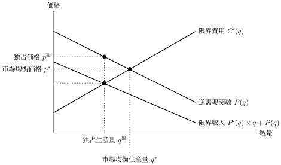
図D.1を見ると，市場均衡での生産量と独占における生産量の関係がわかる．基本的なアイデアはこうである．独占企業は生産量を意図的に減らし，価格を吊り上げることによって利潤を増やすことができる．したがって市場均衡のときより生産量は減り（$q^{\text{独}}\lt q^*$），価格は上がる（$p^{\text{独}}\gt p^*$）．そして当然，社会的総余剰は減少する．なぜならば
\[ P(q^{\text{独}})=p^{\text{独}}\gt \text{限界収入}=C'(q^{\text{独}}) \]となり，社会的総余剰最大化の条件（価格＝限界費用）を満たさなくなるからである．逆需要関数の高さ $P(q)$ は「もう1単位買いたい人の支払意思額」，つまり生産をあと1単位増やしたときの消費者の便益の増分を表す．上の不等式のもとでは，生産量を少し増やすと便益の増分のほうが費用の増分より大きい．つまり社会的にはもっと生産すべきなのに生産されない，過小生産の状態にある．この失われた余剰が本文第4章でみた死荷重損失である．
D.2ラーナー指標とマークアップ
利潤最大化条件 \eqref{eq:mono-foc} をもう少し変形してみよう．その前に，逆需要関数と需要関数の微分の間に成り立つ次の公式を紹介する（逆関数の微分の公式と呼ばれる．詳しくは微分積分・経済数学などの講義で学んでほしい）．
\[ P'(q)=\frac{1}{D'(p)}\quad \text{（ただし } p=P(q)\text{）} \]この関係と $P(q)=p$，$q=D(p)$ であることに注意して，これらを式 \eqref{eq:mono-foc} に代入すると以下のとおりである．
\[ \frac{D(p)}{D'(p)}+p=C'(D(p)) \]これをさらに整理すると次の関係が得られる．
\begin{align*} &\frac{D(p)}{D'(p)}+p=C'(D(p))\\ \iff\ & p-C'(D(p))=-\frac{D(p)}{D'(p)}\\ \iff\ & \frac{p-C'(D(p))}{p}=-\frac{D(p)}{p}\frac{1}{D'(p)}\\ \iff\ & \frac{p-C'(D(p))}{p}=\frac{1}{-\frac{D'(p)\times p}{D(p)}}\\ \iff\ & \frac{\text{独占価格}-\text{限界費用}}{\text{独占価格}}=\frac{1}{\text{需要の価格弾力性}} \end{align*}最後の等式はラーナーの公式と呼ばれるものである．左辺は販売価格に占める利益の割合を指し，マークアップ率と呼ばれる（企業の価格支配力の大きさを測る指標としてラーナー指標とも呼ばれる）．市場均衡では価格と限界費用が等しくなるのでマークアップ率は $0$ である．一方で，独占均衡ではそうではない．一般に企業の価格に対する影響力が高まれば高まるほどマークアップ率は高くなる．そのマークアップ率を決定するのが需要の価格弾力性の逆数である．
一般に需要の価格弾力性が大きくなるとマークアップ率は低くなる．需要の価格弾力性が大きいということは，需要が価格に激しく反応するということである．このとき価格を引き上げようとしても需要が激しく落ち込んでしまうため，引き上げるメリットが小さくなる．つまり独占による弊害は小さい．一方で需要の価格弾力性が小さい財に対しては価格を釣り上げるメリットが大きいので，独占の弊害が強く出る．
D.3クールノー競争
前節までは独占企業の意思決定を考えていた．しかし世の中に独占企業しかないわけではなく，むしろそのような状況は非常に稀である．もし独占を維持することで高い収益が得られているのであれば，他の企業がその市場に参入してくることが考えられる．実際，通常の市場では複数の競合する企業が操業している．こういった市場は寡占市場と呼ばれる．寡占市場では他企業の意思決定を無視することはできず，複数の企業がお互いの出方を読み合いながら自社の戦略を立てなければならない．こういった状況を分析するツールとして最もよく使われているのがゲーム理論である．
本節以降ではゲーム理論の基本概念を用いるが，必要になるのは次の2つだけである．相手の戦略を固定したときに自社の利得（利潤）を最大にする戦略を最適反応と呼び，すべてのプレイヤーが互いに最適反応をとり合っている状態をナッシュ均衡と呼ぶ．詳しくは本文のゲーム理論の章を参照のこと．
複数企業の競争
独占企業の行動分析を複数企業の競争に拡張して考えよう．簡単のため，登場する企業は二社しかないとする．それらを企業 $A$ および企業 $B$ と名付ける．二企業で競争が行われる市場は特に複占市場と呼ばれる．独占企業の分析では独占企業の生産量がそのまま市場全体の生産量であったが，寡占市場では両企業の生産量の合計が市場の生産量となる．
企業 $A$ の生産量を $q_A$，企業 $B$ の生産量を $q_B$ とする．生産のための費用関数は両社共通で $C$ とする（費用関数が異なっても似たような結果になる）．すると市場均衡条件は次のとおりである．
\begin{equation} D(p)=q_A+q_B \label{eq:market-demand} \end{equation}市場価格はこのようにして決定される．市場全体の生産量を $q=q_A+q_B$ とおき，式 \eqref{eq:market-demand} から得られる逆需要関数を $P(q)$ と置く．このとき，企業 $A$ の利潤 $\pi_A$ は次のように書くことができる．
\[ \pi_A(q_A,q_B)=P(q)\times q_A-C(q_A) \]同様に企業 $B$ の利潤 $\pi_B$ も次のように書くことができる．
\[ \pi_B(q_A,q_B)=P(q)\times q_B-C(q_B) \]さて，この二企業がどのように行動するかをゲーム理論を用いて分析する．つまりこの2つの企業を「プレイヤー」，各企業の利潤を「利得」，生産量を「戦略」として，ナッシュ均衡を求める．このようなゲームは考案者の名前を取り，クールノーゲームあるいはクールノー競争と呼ばれている．
クールノー競争の分析
ここでは具体的な計算よりも図を使ってナッシュ均衡を求めていこう．まず企業 $B$ の生産量 $q_B$ が動かないものとして，企業 $A$ の利潤を最大化する生産量を求めてみる．すなわち，企業 $B$ の生産量 $q_B$ に対する最適反応を考えるのである．
独占企業の行動分析と同様に考える．$q=q_A+q_B$ であることに注意すると，企業 $A$ が生産量を少し増やしたときの限界収入は次のようになる（導出は下の発展を参照）．
\[ P'(q)\times q_A+P(q) \]企業 $A$ が生産量を $\Delta$ だけ増やしたときの収入の増分は
\[ P(q+\Delta)\times (q_A+\Delta)-P(q)\times q_A \]である．$-P(q+\Delta)\times q_A+P(q+\Delta)\times q_A=0$ をこの式に足すと
\[ P(q+\Delta)\times (q_A+\Delta)-P(q+\Delta)\times q_A+P(q+\Delta)\times q_A-P(q)\times q_A \]となる．これを $\Delta$ で割ると次の式になる．
\[ P(q+\Delta)\frac{(q_A+\Delta)-q_A}{\Delta}+\frac{P(q+\Delta)-P(q)}{\Delta}\times q_A \]$\Delta$ を $0$ に近づけてやると，第1項は $P(q)$ に，第2項は $P'(q)\times q_A$ になる．これは積の微分法を証明するやり方を直接適用したものである．
この限界収入が限界費用に一致するとき，企業 $A$ の利潤は最大になる．数式で書けば以下のとおりである．
\begin{equation} P'(q)\times q_A+P(q)=C'(q_A) \label{eq:cournot-foc} \end{equation}これを図示すると図D.2のとおりになる．この利潤を最大化する生産量が最適反応生産量である．
さて，企業 $A$ の最適反応生産量が，企業 $B$ の生産量が $q_B$ から $q_B'$ に変化したときにどう動くかを考えてみよう．$q_B'\gt q_B$ としてみる．そうするとこのときの市場生産量については $q'=q_A+q_B'\gt q=q_A+q_B$ となるので，市場全体の生産量も増加する．このとき限界収入 $P'(q')\times q_A+P(q')$ はどうなるだろうか．通常，逆需要関数は生産量に対して減少的である．なぜならば市場に財があふれればあふれるほどその財の希少価値は減少していき，結果として価格も減少すると考えられるからである．そうすると，限界収入には価格の項 $P(q)$ があるので，限界収入そのものも減少すると考えられる．それを図に表したものが図D.3である．
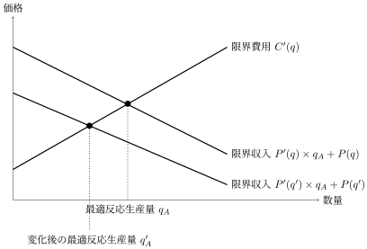
この図に従うと，企業 $B$ の生産量が $q_B$ から $q_B'$ に増加すると，企業 $A$ の最適反応生産量は $q_A$ から $q_A'$ に減少するという関係が見て取れる．その関係を表したものが図D.4である．
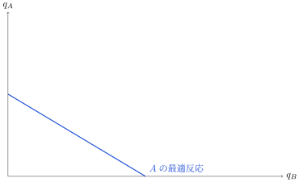
全く同様の議論によって，企業 $B$ の最適反応も企業 $A$ の生産量 $q_A$ に対して減少的である．この企業 $B$ の最適反応も先ほどの図に書き込んで得られるのが図D.5である．この図において最適反応曲線同士が交わる点 $(q_A^{\text{ク}},q_B^{\text{ク}})$ がナッシュ均衡になる．
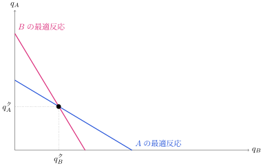
数式で書けば以下のとおりである．
\begin{align*} P'(q)\times q_A+P(q)&=C'(q_A)\\ P'(q)\times q_B+P(q)&=C'(q_B) \end{align*}この連立方程式を解く $q_A,q_B$ がクールノー競争の均衡生産量というわけである．クールノー競争のナッシュ均衡は特別にクールノー均衡あるいはクールノー・ナッシュ均衡とも呼ばれるが，同じものである．
クールノー競争の語源となった経済学者アントワーヌ・オーギュスタン・クールノーは，ナッシュ均衡が定義される100年以上前にこの寡占市場の分析を行っているため，特別に名前がついている．
D.4ベルトラン競争
前節では複数の企業が数量を調整する競争を考えた．しかし実際に我々がよく目にするのは，価格を調整する競争である．このような競争はベルトラン競争と呼ばれる．これがどのようなものかを見てみよう．議論を簡単にするため，企業の費用関数 $C$ は $C(q)=c\times q$ という形で書けるとする．ここでの $c\gt 0$ は限界費用になる．
いま，全く同一の財を生産する2つの企業 $A$，$B$ がそれぞれ価格 $p_A$，$p_B$ をつけているとする．同一の財を生産するので，消費者は安いほうの価格をつけている企業から財を購入する．したがって $p_A\gt p_B$ であるとき，それぞれの企業の利潤は以下のようになる．
\begin{align*} \pi_A&=0\\ \pi_B&=p_B\times q-c\times q \quad \text{（ただし } q=D(p_B)\text{）} \end{align*}このままであれば企業 $A$ は全く利益を出すことができない．したがって，$p_A=p_B=p$ まで価格を下げようとするだろう．このときこの2企業は消費者を二分するとしてみよう．利潤は次のとおりである．
\begin{align*} \pi_A&=p\times \frac{q}{2}-c\times\frac{q}{2} \\ \pi_B&=p\times \frac{q}{2}-c\times\frac{q}{2}\quad \text{（ただし } q=D(p)\text{）} \end{align*}さて，ここで下げ止まるかというとそうではない．企業 $B$ が価格をほんの少し下げて $p_B=p-\epsilon$ にしてみたらどうだろうか．ここで $\epsilon$ は，ほんの小さな数字のことを指す．1円とか1銭を想像してもらいたい．このとき $p_A\gt p_B$ であるので，各社の利潤は以下のとおりである．
\begin{align*} \pi_A&=0\\ \pi_B&=(p-\epsilon)\times q-c\times q \quad \text{（ただし } q=D(p-\epsilon)\text{）} \end{align*}価格が減るので財1単位あたりの儲けはほんの少し少なくなるが，消費者の需要を企業 $A$ からすべて奪い取れ，結果として売上量が二倍以上になるのでその分利益は増大する．そうすると今度はまた，企業 $A$ が価格を下げ……というスパイラルが発生する．結果として，値下げ競争は各社に利益が発生している間，つまり $p\gt c$ である間ずっと続く．最終的には $p=c$ となり，両者の利益は $0$ となる．これがベルトラン競争の結果である．たった二社しかいないのに，完全競争市場と同じ「価格＝限界費用」が実現するのである．
キャパシティ制約下の価格競争
結果を見てわかるとおり，クールノー競争とベルトラン競争では全く結果が違う．では現実ではどちらの競争が起こるのだろうか．ひとつの考えは，財や市場の特性，慣習などの差に起因するというものである．一方で，クールノー競争とベルトラン競争はキャパシティ制約というものを考えることで自然に接続できることが知られている．
ベルトラン競争では価格が低いほうの企業がすべての需要を得られるとしていた．しかし，商品には在庫というものがあり，在庫以上にものを売ることはできない．また，在庫をすぐに増やすことは難しい．財を作るための工場をすぐに増設することは難しいからである．このように，たとえ価格を下げて需要を独り占めすることができたとしても，すぐさま売ることができる量には限界がある．この売ることのできる最大の量をキャパシティと呼ぶ．キャパシティを超える需要には売ることができないので，需要がそれを超えればもう一方の企業から買わざるを得ない．そのときには，もう一方の企業は独占企業のように振る舞うことができるのである．こういった競争はキャパシティ制約下の価格競争と呼ばれる．
この価格競争が行われることを見越して，各企業はキャパシティをどれだけ設定するかについてのゲームを行う．具体的には次のとおりである．
- ステージ1：各企業 $i=A,B$ はキャパシティ $q_i$ を決定する
- ステージ2：各企業は値下げ競争を行う．$p_A\lt p_B$ であれば企業 $A$ の財への需要は $D(p_A)$ であり，企業 $B$ の財への需要は残りの $D(p_B)-q_A$ である
このとき，このゲームのナッシュ均衡の生産量はクールノー競争の均衡の生産量と一致する．つまりクールノー競争は，キャパシティ設定競争の均衡として解釈することができるのである．この理由を大まかに見てみよう．
いま，$A$ 社のキャパシティを $q_A$，$B$ 社のキャパシティを $q_B$ としてみる．もし価格競争ステージで $p_A\lt p_B$ であり，なおかつ
\[ D(p_B)\lt q_A+q_B \]となっていたらどうだろうか．このときは売れ残りが発生していることになる．しかしながら，売れ残りが発生することが予測されるのであれば，企業は初めからその量を作ることはないだろうと考えられるので，このケースは最適ではありえない．逆に
\[ D(p_B)\gt q_A+q_B \]となっていればどうだろうか．このときは企業 $B$ にとってみれば $D(p_B)-q_A\gt q_B$ だけの需要がある．ただし売れる最大量は $q_B$ であるので，ほんのわずかに価格を上げても売れる量は減らず，売上の単価だけが上がる．つまり企業 $B$ の利潤は増えることになる．どちらにしろ，そういった状態は均衡ではないことがわかる．したがって $D(p_B)=q_A+q_B$ が成立していなければならない．
では企業 $A$ についてはどうだろうか．$p_B\gt p_A$ であるので $D(p_A)\gt D(p_B)=q_A+q_B$ となるはずである．ところがこのとき，$A$ に対する需要は $D(p_A)\gt q_A$ となるので，$p_A$ を上げることで利益を得ることができる．したがってこのような状態はありえないのである．同様に $p_A\gt p_B$ となるケースもありえない．
というわけで $p_A=p_B=p$ のケースを考えてみよう．この場合は先ほどの議論と同様に
\[ D(p)=q_A+q_B \]という状態が成立していることになる．この状態では，作ってしまった量はすべて売れたことになる．この状態で決まる価格は，クールノー均衡でつく価格と同じもの，すなわち生産量の合計 $q_A+q_B$ をちょうど売り切る価格である．したがってそれを所与にキャパシティ設定競争を行えば，出てくる生産量はクールノー均衡と同じものになる．
このアイデアは Kreps and Scheinkman (1983) "Quantity Precommitment and Bertrand Competition Yield Cournot Outcomes," The Bell Journal of Economics, 14 (2), 326–337 によるものである．以上の分析はかなり単純化している．
D.5競争戦略の二段階モデル
再びクールノー競争に戻って考えてみよう．企業が直面する問題のひとつは，こういった競争を有利にするにはどうすればよいかということである．本節では，長期的にクールノー競争のような競争を有利にするための戦略行動を考える．考えるのは次のような二段階のモデルである（クールノー競争でなくても似たようなことを考えることはできる）．
- 第1段階：企業 $A$ が長期戦略を選ぶ（企業 $B$ も同じように選べるとしてもよいが，ここでは簡単のため企業 $A$ だけが選ぶことを考える）
- 第2段階：第1段階で選んだ長期戦略をもとにクールノー競争を行う
ここで言う長期戦略は多岐にわたる．例えば生産設備や研究開発への投資から，広告に対する投資などである．これを図を用いて解説する．
費用削減投資
まず最初に考えることは，費用を削減することである．ここでは限界費用を削減するようなものを考える．まずこれは，費用が減るので直接利潤を増やす．それだけではなく，第2段階でのナッシュ均衡の変化を通じた効果も存在する．図D.6を見るとわかるように，限界費用を削減すると企業 $A$ の最適反応生産量は増加する．
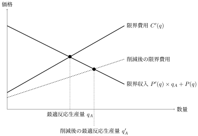
これにより最適反応曲線の変化を考えると，図D.7のとおりである．
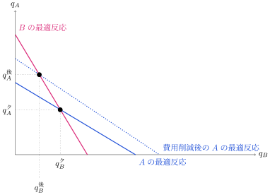
この効果は次のように解釈できる．費用削減によって企業 $A$ はより多くの財を生産するようになる．すると戦略的代替性により，企業 $B$ は生産量を減らす．このような戦略の相互作用を通じた効果は戦略的効果と呼ばれる．基本的に企業にとっては，自社の生産量が増え他社の生産量が減るほうが望ましい．したがって戦略的効果も自社の利潤を増やす方向に働く．このような図を用いた戦略的効果の分析方法は，他の長期戦略の分析にも適用できる．
広告投資
次に，需要拡大のための広告投資を考える．広告によって企業 $A$ の需要だけが拡大する場合は，費用削減の効果と同じである．この場合，企業は広告投資に積極的になる．一方で，企業 $A$ と $B$ は全く同一の財を生産しているので，広告は企業 $B$ の需要を拡大する効果も持つ．そうすると $B$ の最適反応生産量も増大させる効果を持つ．これを図示したものが図D.8である．
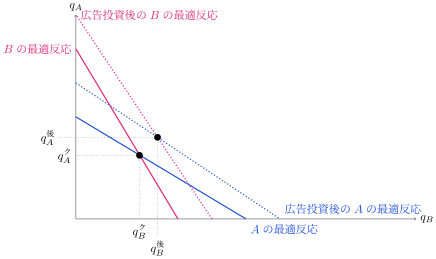
企業 $B$ は費用をかけなくても，企業 $A$ の広告投資にタダ乗りすることができる．したがって（同質財の市場では）企業は広告投資にはそこまで熱心になれない．
戦略的委任
最後の長期戦略として，目的の変更という方法を考えよう．例えば「利潤最大化」を考えるよりも，費用を無視して「収入の最大化」だけを考える，というものである．費用を無視して収入の最大化を考えると企業はより生産に積極的になるので，戦略的効果は費用削減の効果と同じである．したがって費用削減効果と同じ理由で利潤を増やすことが可能になる．このように「利潤最大化」という目的は必ずしも利潤最大化につながらない．むしろ別の目的を持ってきたほうが利潤が増える場合があるのである．このように戦略的に目的を変更することは戦略的委任と呼ばれる（実際には，「売上を伸ばせ」という目標を与えた経営者に経営を委ねる，といった形をとる）．
D.6ホテリングモデル（製品差別化）
D.3節・D.4節では，全く同一の財についての競争を考えていた．そこでの価格競争は利益が $0$ になるまで値下げを続けるというものであり，企業にとって望ましいものとは言えない．そうすると企業にとっては，価格競争をいかに避けるべきかということが重要になってくる．実際，複数の企業が全く同一の財・商品を提供している状況はそこまで多くはない．大抵の場合，何らかの差別化を図っている．本節では財に異質性がある場合を考え，企業はどのように財を差別化するのかということを分析していく．
差別化の効果についてまずは簡単にまとめよう．製品の差別化には2つの効果がある．ひとつは先に述べた，価格競争を避けるという効果である．これは企業にとって好ましい．しかし，差別化には対象となる消費者を限定するという効果がある．これは潜在的な需要を減らすことにつながる．これは企業にとってマイナスの側面である．企業はこの2つの相反する効果と競合他社の行動を勘案しながら，望ましい差別化戦略を選択する必要がある．
差別化には大きく分けて二種類ある．これは財の物理的な性質によるものではなく，消費者の満足度の尺度によるものである．ひとつは垂直的差別化といわれるものであり，これは財の質に関する差別化である．すべての消費者は質が高いほうを好むが，この好みの度合いは消費者によって異なる．これに着目し，高級品と廉価品に分かれて差別化を行うのである．もう一つは水平的差別化と呼ばれるものである．これは品質ではなく，人々の好みの違いに応じた差別化である．続く分析では，この水平的差別化の代表的なモデルであるホテリング・モデルを取り上げる（垂直的差別化もホテリング・モデルを少し変形して表現できることが知られている）．
ホテリング・モデル
いま，図D.9にあるような長さ $1$ の線分を考える．この線分上には人々が住んでおり，その両端に企業 $A$ と企業 $B$ が位置している．
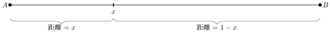
図中の点 $x$ に居住している人は，企業 $A$ から製品を購入するか，企業 $B$ から製品を購入するかを選択することができる．企業 $A$ から購入する場合，効用 $u$ を得るが，企業 $A$ が設定する価格 $p_A$ を払う必要がある．また，$x$ から企業 $A$ の位置まで移動しなければならない．このとき移動に費用がかかるものとし，その費用を $t\times x$ とする．移動距離 $\times$ 移動費用の単価 $t$ である．車で行くならガソリン代，電車で行くなら電車賃と考えればよい．企業 $B$ から購入する場合も同様であるが，企業 $B$ までの距離は $1-x$ であるので，企業 $B$ まで移動する費用は $t\times (1-x)$ である．まとめると以下のようになる．
- 企業 $A$ で買う場合の効用：$u-p_A-t\times x$
- 企業 $B$ で買う場合の効用：$u-p_B-t\times (1-x)$
このモデルはホテリング・モデル，あるいはホテリング立地モデルと呼ばれている．文字どおりに解釈すれば異なる位置に立地する二企業の競争であるが，これを差別化の度合いと解釈することもできる．つまり，この直線は「ある製品の，人によって好みが分かれる性質」を直線状に並べたものであり，人々の居住する位置はその人の好みである．人が企業 $A$ に近い場所に居住しているということは，その人の好みが企業 $A$ の製品に近いということを意味している．
差別化された財の価格競争
さて，このホテリング・モデルにおける企業の価格競争を考えてみよう．言うまでもないが，ここでの戦略は価格である．地点 $x$ に居住する消費者が企業 $A$ から製品を買うことを選ぶ条件は以下のとおりである．
\begin{align*} &u-p_A-t\times x\gt u-p_B-t\times (1-x)\\ \iff\ & \underbrace{p_A+t\times x}_{\text{$A$の価格＋$A$までの移動費用}}\lt \underbrace{p_B+t\times (1-x)}_{\text{$B$の価格＋$B$までの移動費用}} \end{align*}要するに，価格と移動費用の合計費用が安いほうから買うというものである．いま，企業 $A$ で買うことと企業 $B$ で買うことがちょうど無差別な人を考える．その人の居住地 $x^*$ は次の式を満たす．
\begin{align*} &p_A+t\times x^*=p_B+t\times (1-x^*)\\ \iff\ & x^*=\frac{p_B-p_A}{2t}+\frac{1}{2} \end{align*}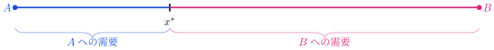
つまり図D.10のように，居住地パラメータ $x\lt x^*$ の人が企業 $A$ に買いに行き，$x\gt x^*$ の人は企業 $B$ に買いに行く．したがって，企業 $A$ の需要は $x^*$ そのものであり，企業 $B$ の需要は $1-x^*$ である．さらにこの $x^*$ は，企業 $B$ の価格 $p_B$ について増加的であり，企業 $A$ の価格 $p_A$ について減少的である．
では各企業の利潤を考えてみよう．簡単のために費用関数は $C(q)=c\times q$ とする．それぞれの利潤は次のとおりである．
- 企業 $A$ の利潤：$(p_A-c)\times x^*$
- 企業 $B$ の利潤：$(p_B-c)\times (1-x^*)$
これにより，企業 $A$ の利潤最大化行動を考えてみよう．企業 $A$ が価格を少し上げたときの利潤の変化は以下の式で表される．ただし $\pd{x^*}{p_A}$ は $x^*$ を $p_A$ で微分したもの（$\lt 0$）である．
\[ x^*+(p_A-c)\times \pd{x^*}{p_A} \]これを解釈すると次のとおりである．価格を上げると，いま売れている量 $x^*$ の分だけ利益が増加する．一方で，価格を上げると $x^*$ が減少してしまう．この効果が $\pd{x^*}{p_A}$ で書かれている．限界収入と限界費用という言葉を使えば，限界収入は $x^*+p_A\times \pd{x^*}{p_A}$ であり，限界費用の部分は $c\times \pd{x^*}{p_A}$ である．この2つの効果が打ち消し合うとき，企業 $A$ の利潤は最大化される．これを図示すると図D.11のようになる．これが $p_B$ に対する最適反応である．
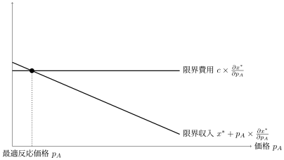
ではクールノー競争の分析のときと同様に，企業 $B$ の価格が $p_B$ から $p_B'$ に変化したらどうなるかを考えよう．$p_B'\gt p_B$ であるとする．すると企業 $A$ の需要 $x^*$ は以下のように増加する．
\[ x^*=\frac{p_B-p_A}{2t}+\frac{1}{2}\lt x'=\frac{p_B'-p_A}{2t}+\frac{1}{2} \]これを考えると，企業 $A$ の限界収入 $x^*+p_A\times \pd{x^*}{p_A}$ も増加する．これを図示すれば図D.12のようになり，最適反応価格が増加していることがわかる．
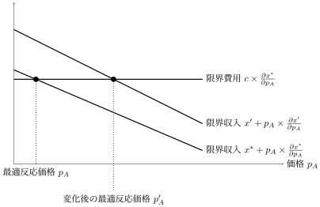
まとめれば，企業 $B$ の価格が増加したとき，企業 $A$ の最適反応価格も増加する．同様の分析をすれば，企業 $A$ の価格が増加したとき，企業 $B$ の最適反応価格も増加する．
この最適反応を用いて，クールノー競争のときと同様にナッシュ均衡を導出する．これは図D.13で図示される，最適反応曲線同士が交わる点 $(p_A^{\text{ホ}},p_B^{\text{ホ}})$ である．
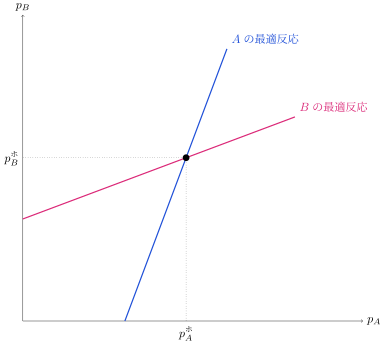
差別化度合いの選択
先ほどまでは企業の立地点は両端に固定されていた．では，企業が価格競争を始める前に立地点を選ぶことができたらどうなるだろうか．これは図を用いて考えてみよう．
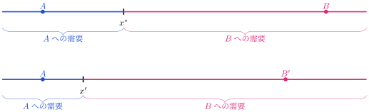
図D.14を見てみよう．立地点を $B$ から $B'$ へ，$A$ 方向へ近づけることで，無差別になる境目は $x^*$ から $x'$ へ移動する．これにより企業 $B$ の需要は増大することになる．この効果は直接効果と呼ばれる．
これだけをみれば，差別化を減らして $A$ に近づけるほうがよいように考えられるが，このあと起きる価格競争の影響も考慮に入れなければならない．境目の $x^*$ を下げるということは，図D.12でみたのと逆向きの変化により，企業 $A$ の最適反応価格 $p_A$ を下げることになる．これを図示したものが図D.15である．相手企業の価格が下がる効果を通じて，自社の価格と需要が減少する．これは戦略的効果と呼ばれる．
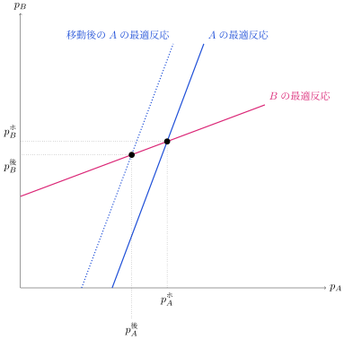
実際の差別化度合いは，直接効果と戦略的効果の兼ね合いである．価格に対する規制などによって戦略的効果が働かない場合には直接効果が支配し，両企業は近づき合って全く同一の財を生産するようになる．
D.7カルテルの不安定性（繰り返しゲーム）
本文第4章では，カルテル（企業どうしが示し合わせて価格を高く保つこと）が社会的総余剰を減らすことをみた．しかしD.4節のベルトラン競争の分析によれば，各企業には値下げをして需要を独り占めする誘因が常にある．それではカルテルはそもそもどうやって維持されるのだろうか．鍵は，競争が一度きりではなく長期的な関係の中で繰り返されることにある．
いままで扱ってきた競争は，各企業が一度だけ価格や生産量を決めるようなものであった．これはゲーム理論で言えば「一度限りのゲーム」と呼ばれるものである．これに対して，価格設定ゲームなどが多数の期間にわたって行われる状況は，それ全体をひとつのゲームと見て繰り返しゲームと呼ばれる．本節では繰り返しゲームを簡単に見ていく．
今日の裏切りか，明日の協力か
繰り返しゲームの一例として，ベルトラン競争を簡単にした，表D.1に表される二択ベルトラン競争を見てみよう．このゲームはベルトラン競争の価格設定ゲームの選択肢を「高価格（H）」と「低価格（L）」の二択にしたものである．
| 企業B | |||
|---|---|---|---|
| 高価格（H） | 低価格（L） | ||
| 企業A | 高価格（H） | 3, 3 | −1, 6 |
| 低価格（L） | 6, −1 | 0, 0 | |
このゲームを一度だけプレイするとき，ナッシュ均衡はただひとつ，$(L,L)$ である（相手がどちらを選んでいても，自分は低価格を選んだほうが利潤が高いことを表から確認してほしい）．
さて，このゲームを何回も繰り返すことを考えてみる．まずは二回だけこのゲームをプレイすることを考えてみよう．そして，ある「約束」があれば二企業が協力して「高価格」を維持できることを示す．そのために，この二企業は次のような「約束」をしているとする．
- 第1回目のプレイで両者ともに「高価格」を選択しているならば，第2回目のプレイでも両者ともに「高価格」を選択する
- 第1回目のプレイでどちらかが「低価格」を選択しているならば，第2回目のプレイでは両者ともに「低価格」を選択する
この約束が第2回目のプレイで必ず守られると想定する．すると，第1回目のプレイで「高価格」をつけることがナッシュ均衡になることを見てみよう．その前に，各企業の時間を通じた総利潤を定義する．各企業の第1回目で得られる利潤 $\pi_1$ と第2回目で得られる利潤 $\pi_2$ について，総利潤は以下のように定義される．
\[ \pi=(1-\delta)\times \pi_1+\delta\times \pi_2 \]この $\delta$（$0\lt \delta\lt 1$）は割引因子と呼ばれ，第2回目の利潤の重要さを表すパラメータのようなものである．$\delta=0$ であればこの企業は第1回目で得られる利潤しか気にしないし，$\delta=1$ に近ければ第2回目で得られる利潤を重視する．この $\delta$ の解釈としては次のようなものがある．ひとつには，企業の（あるいは経営者の）単純な好みというものである．また別の解釈として，利子率を意識したものがある．今日の利潤は貯金しておけば利子がついて来年にはより大きな値になる．したがって利子率が大きければ，より現在を重視するようになるのである．最後の解釈例としては，このゲームが続く確率というものである．第2回目のゲームが行われないかもしれないという可能性を考えるのである．例えば他社（あるいは自社）が何かの理由で倒産してしまうかもしれない．この第2回目のゲームが行われる確率が低くなればより現在を重視するだろうし，高いのであればより将来を重視するようになるだろう．その程度を割引因子が表現しているのである．
さて，分析に戻ってみよう．企業 $A$ のことを考える．両者ともに「高価格」をつけることがナッシュ均衡になるかどうかを考えるので，企業 $B$ が「高価格」をつけている状況を考えよう．いま企業 $A$ が高価格をつけるとき，両者ともに高価格をつけることになるので，「約束」により第2回目のプレイでも「高価格」が維持される．すると高価格をつけることの総利潤は
\[ \pi(H)=(1-\delta)\times 3+\delta\times 3=3 \]である．一方で「低価格」をつければ，今日は $6$ の利潤を得るが，「約束」により明日は両者とも「低価格」をつける．したがって低価格をつけることの総利潤は
\[ \pi(L)=(1-\delta)\times 6+\delta\times 0=6\times (1-\delta) \]となる．両者を比較すると，$3\gt 6\times(1-\delta)$，つまり $\delta\gt 1/2$ であれば高価格をつけることのほうが総利潤が高くなる．これは企業 $B$ についても同じことが言える．まとめると，$\delta\gt 1/2$ のとき，高価格を維持することがナッシュ均衡になる．
この結果の直感的な理解は次のとおりである．相手が高価格をつけているとき，低価格をつければ「今日は」需要を独り占めにして高い利益を得ることができる．しかしながら，これは相手に対する裏切りである．「約束」により，明日には相手に低価格をつけられ「報復」を受ける．つまりは，今日裏切って一日限りの利益を得るか，協力して明日の協力を取り付けるかという問題になるのである．明日の利益を十分重視するならば，つまり割引因子 $\delta$ が十分に大きいのならば，協力を選ぶのである．
「約束」は守られるか：有限回と無限回
では次の問題である．この「約束」は明日ちゃんと守られるのだろうか．実は，このゲームがちょうど二回で終わるのならば「約束」は守られない．明後日以降はそれ以上関係が続かないので，今日高価格をつけたとしてもそうでなかったとしても，明日は「低価格」の価格競争が唯一のナッシュ均衡になるのである．それを読み込んでいれば，今日高価格を維持することはできない．「約束」が守られないことがわかっているからである．
この「約束」が第2回目のプレイでも機能するのは，第3回目のプレイが存在して，そこでも同様の「約束」が守られるときである．同じことを考えれば，その第3回目のプレイで「約束」が守られるためには，第4回目のプレイが存在して，そしてそこでも「約束」が守られることが必要である．これを繰り返していくと，ゲームが無限に繰り返されるのならば，そして何回目のプレイでも「約束」が守られるのならば，「高価格」は維持できる．実際，無限にゲームが繰り返されるとき，そういった「約束」を守ることがナッシュ均衡になりうるのである．
こういったある種の「協力」がカルテルを現実のものにしている．これは先ほどのような「約束」を通じて維持される．この形の約束の典型例として最低価格保証というものがある．これは，他店が自社よりも安い価格で商品を売っていれば自社も同じ価格で提供する，というものである．一見この最低価格保証は消費者にとって好ましいようにも見えるが，実際には「高価格」を維持するための道具になりうる．なぜなら，「ひとつの企業が低価格にすればすべての企業が同じ低価格にする」という形の約束，つまり上の報復の約束と同じ構造をしているからである．こういった約束を通じて高価格が維持されるのである．
観測可能性の問題
前節までの議論は，プレイヤーの行動が完全に観測できることを想定していた．実際，「約束」は過去の「裏切り」に対しての報復を記述している．しかしこの「過去の裏切り」は必ずしも観測されるものではない．他企業の価格を常に観測できるものではないし，相手は店頭でのみこっそり値下げをするかもしれない．また，情報が間違って伝わる場合もある．本当は値下げしていないのに，値下げしたと言いふらされる場合がある．そういった状況は不完全観測と呼ばれる．これに対して，過去の行動がお互いにすべて観測可能であるときは完全観測であるという．
不完全観測では，たとえ無限にゲームを繰り返したとしても，先ほどの「約束」では常に高価格を維持することはできない．実際，両企業が高価格を維持している状況を考えてみよう．ここでもし，企業 $B$ が「企業 $A$ が値下げをした」という噂を聞いたとしよう．不完全観測であるので，その噂は間違っているかもしれない．そして，「両企業が高価格を維持している」とお互いに信じている状況である．企業 $B$ はその噂が間違いだと信じることになる．そうすると企業 $B$ は報復を発動できない．それを利用して，企業 $A$ は裏切ることだろう．結果として，「両企業が常に高価格を維持している」という状況は維持できなくなるのである．カルテルは，違反の監視が難しいところから崩れていく．
常に高価格を維持することはこのとおり不可能だが，戦略をうまく工夫すれば，不完全観測のもとでも高価格の維持に近い利潤を得られることが知られている．繰り返しゲームのより詳しい解説は伊藤・小林・宮原（2019）『組織の経済学』第7章を，専門書としては Mailath and Samuelson (2006) Repeated Games and Reputations: Long-Run Relationships を参照のこと．
D.8プラットフォーム市場（二面市場）
スマートフォンのアプリストア，フードデリバリー，クレジットカード，SNS，動画サイトなどでは，普通の「売り手と買い手」の市場とは少し違うことが起きる．こうしたサービスは，片方の利用者だけに財を売っているのではない．複数の集団を同じ場所に集め，その間の取引や出会いを助けている．このような市場をプラットフォーム市場，または二面市場と呼ぶ．
たとえばフードデリバリーのアプリを考えよう．このアプリには，食事を注文する人と，注文を受けたい店がいる．注文する人にとっては，参加している店が多いほどアプリの価値が上がる．反対に，店にとっては，注文する人が多いほどアプリに出店する価値が上がる．つまり，片方の人数が増えると，もう片方の価値が上がる．これを交差ネットワーク外部性と呼ぶ．「交差」は，片方の集団の人数が，別の集団の価値に影響するという意味である（同じ集団の中で人数が増えるほど価値が上がる場合は，同側ネットワーク外部性と呼ばれることがある）．
二面市場の標準的な理論として，Rochet and Tirole（2003）と Armstrong（2006）がある．
簡単なモデル
食事を注文する人を「利用者」，注文を受ける側を「店」と呼ぶことにしよう．利用者の数を $n_{\text{利}}$，店の数を $n_{\text{店}}$ とする．また，プラットフォームが利用者に請求する価格を $p_{\text{利}}$，店に請求する価格を $p_{\text{店}}$ とする．ここでの価格は，月額料金，手数料，会員費，広告費などをまとめたものだと考えればよい．
利用者は，アプリそのものから得る基本的な便益を $b_{\text{利}}$ だけ持っているとする．さらに，店が1つ増えるたびに，利用者の便益は $\alpha$ だけ増えるとする．このとき，利用者が参加する条件は次のように書ける．
\[ b_{\text{利}} + \alpha n_{\text{店}} - p_{\text{利}} \ge 0 \]左辺は，参加したときの得から支払いを引いたものである．店が多いほど $n_{\text{店}}$ が大きくなるので，利用者は参加しやすくなる．
同じように，店はアプリそのものから得る基本的な便益を $b_{\text{店}}$ だけ持っているとする．さらに，利用者が1人増えるたびに，店の便益は $\beta$ だけ増えるとする．このとき，店が参加する条件は次のように書ける．
\[ b_{\text{店}} + \beta n_{\text{利}} - p_{\text{店}} \ge 0 \]利用者が多いほど $n_{\text{利}}$ が大きくなるので，店は参加しやすくなる．この2つの条件が同時にあるため，プラットフォームでは「どちら側にいくら請求するか」がとても大事になる．
なぜ片側を無料にするのか
普通の財を売る企業なら，価格を下げると，その財から得る収入は減る．しかしプラットフォームでは，片方の価格を下げることが，もう片方からの収入を増やすことがある．
利用者価格 $p_{\text{利}}$ を下げると，まず利用者は参加しやすくなる．すると $n_{\text{利}}$ が増える．利用者が増えると，店にとってアプリの価値が上がるので，店は参加しやすくなるし，店側の手数料 $p_{\text{店}}$ を払ってもよいと思いやすくなる．この流れをまとめると次のようになる．
- 利用者側の価格を下げる
- 利用者が増える
- 店にとっての価値が上がる
- 店の参加や店側からの収入が増える
したがって，プラットフォームにとっては，片側を無料にしたり，クーポンでむしろ補助したりすることが合理的になる場合がある．利用者側を無料にして人を集め，店側から手数料を取る，という形はその一例である．これは「利用者に費用がかからない」という意味ではない．利用者を集めることが，店側の価値を高めるからである．
どちら側からお金を取るべきか
どちら側を安くすべきかは，どちら側を増やすと相手側の価値が大きく上がるかによって決まる．利用者が1人増えることが店にとって大きな価値を持つなら，利用者側を安くして集める意味が大きい．反対に，店が1つ増えることが利用者にとって大きな価値を持つなら，店側を安くして出店数を増やす意味が大きい．
これを上のモデルで言えば，$\beta$ が大きいときは，利用者を増やすことが店側の価値を大きく上げる．この場合，利用者側を安くする理由が強くなる．反対に，$\alpha$ が大きいときは，店を増やすことが利用者側の価値を大きく上げる．この場合，店側を安くする理由が強くなる．
ここから，プラットフォームの価格は，単純な「費用に何円上乗せするか」だけでは決まらないことがわかる．大事なのは，どちら側を増やすと，もう片方の参加がどれだけ増えるかである．
実証研究：本当に片側が安いのか
ここまでは理論の話だった．では現実のプラットフォームは，本当に「片側を安くして，もう片側から取る」という非対称な価格づけをしているのだろうか．いろいろな市場のデータを使って，これを確かめた研究がある．以下はいずれも，市場のデータから両側の需要や価格のしくみを推定した（数式モデルを現実のデータに当てはめて数値を求めた）研究である．
- クレジットカード：消費者はカードを使うとポイントやキャッシュバックという形でむしろ得をし，手数料を払うのは加盟店（お店）側である．多くの消費者が1枚のカードに使い方を集中させることも示された（Rysman, 2007）．「なぜカードはポイントをくれるのか」は，消費者を集めることが加盟店側の価値を高めるからだ，と二面市場の理論で説明できる．
- 電話帳広告（Yellow Pages）：利用者は無料で使え，お金を払うのは広告を載せる事業者側である．利用者が多いほど広告主が払ってもよい額が上がり，広告が多いほど利用者の利用が増える，という両側のプラスの影響がデータで確認された（Rysman, 2004）．
- 雑誌：読者が払う表紙の値段は低めに抑えられ，もうけの多くは広告主側から得ている．広告が増えると表紙価格を下げて読者をもっと集め，読者が増えると広告料が上がる，という非対称な反応が推定された（Kaiser and Wright, 2006）．これは「価格の水準より構造が大事」という理論をまっすぐ確かめた例である．
市場はばらばらでも，出てくる形は同じである．相手側により大きな価値をもたらす側を安くして集め，もう片側から回収する．二面市場の理論が言う「価格の構造の大切さ」は，現実のデータでも見てとれる．
政策を見るときの注意
プラットフォーム市場では，手数料の上限や価格規制を考えるときにも注意が必要である．たとえば，店側の手数料 $p_{\text{店}}$ に上限をかけると，店は参加しやすくなるかもしれない．しかし，プラットフォームはその分を利用者側の価格 $p_{\text{利}}$ に上乗せするかもしれない．すると利用者が減り，結局，店にとっての価値も下がる可能性がある．
もちろん，これは「規制してはいけない」という意味ではない．プラットフォームが強い市場支配力を持つ場合や，利用者の情報を過度に集める場合には，規制が必要になることもある．ただし，二面市場では片方の価格だけを見て判断すると，全体の動きを見誤ることがある．利用者側と店側を同時に見る必要がある．
要するに，プラットフォーム市場は，外部性，価格づけ，市場支配力を組み合わせた応用理論である．本文第4章で学んだ外部性は，ここでは「相手側が多いほど自分の価値が上がる」という形で現れる．そして本文第9章で学ぶルール設計（メカニズムデザイン）の考え方は，どちら側からお金を取り，どちら側を集めるかという問題にそのままつながる．